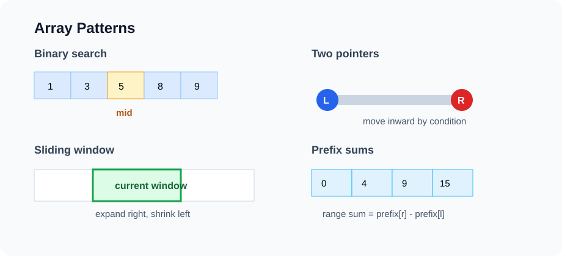

Lesson 4
Arrays, ArrayList, and Core Array Patterns
Arrays are the foundation for many data structures and many data-processing workflows. This lesson studies arrays from three angles: how they store data, what operations they make cheap, and which algorithmic patterns they enable.

Example first: daily temperature data
Suppose we have daily high temperatures for a city. We might want to answer questions like:
- What was the hottest day?
- What was the average temperature over a 7-day window?
- Was there a pair of days whose temperatures sum to a target?
- How many days are above a threshold in a range?
int[] temps = {42, 45, 51, 50, 49, 55, 61, 63, 60, 58};These are array questions. Even if the real data eventually lives in a table or dataframe, the basic computational model is often a sequence of values.
Why arrays matter
An array stores elements in indexed positions. Java arrays have fixed length. The key operation is random access: given an index, retrieve or update that position in constant time.
int first = temps[0];
int seventh = temps[6];
temps[2] = 52;This is powerful because many algorithms are built around controlling indices carefully. The weakness is that arrays do not naturally grow, and inserting in the middle requires shifting elements.
Java array basics
int[] a = new int[5]; // [0, 0, 0, 0, 0]
int[] b = {3, 1, 4, 1, 5}; // literal initialization
System.out.println(b.length); // 5
System.out.println(b[2]); // 4
Array indices run from 0 to length - 1. Accessing outside that range throws
ArrayIndexOutOfBoundsException.
for (int i = 0; i < b.length; i++) {
System.out.println("index " + i + ": " + b[i]);
}Enhanced for-loops are nice when you only need values. Use index loops when the index itself matters.
for (int x : b) {
System.out.println(x);
}Array vs ArrayList
Java arrays are fixed-size. ArrayList is a dynamic array implementation from the Java Collections
Framework. It grows as needed and stores objects, not primitives.
ArrayList<Integer> nums = new ArrayList<>();
nums.add(10);
nums.add(20);
nums.add(30);
System.out.println(nums.get(1)); // 20
nums.set(1, 99);| Operation | Array | ArrayList | Reason |
|---|---|---|---|
| Get by index | O(1) | O(1) | Direct indexed access |
| Set by index | O(1) | O(1) | Direct indexed update |
| Append | Not flexible | Amortized O(1) | Dynamic resizing |
| Insert at front | O(n) | O(n) | Shift elements right |
| Remove from front | O(n) | O(n) | Shift elements left |
| Search unsorted | O(n) | O(n) | May inspect every value |
ADT view: indexed sequence
From an interface perspective, arrays and ArrayLists are both indexed sequences. The interface tells us what operations we expect, while the implementation controls the cost.
interface IndexedSeq<E> {
int size();
boolean isEmpty();
E get(int index);
void set(int index, E value);
void addLast(E value);
E removeLast();
}This interface is good when index access is central. It is not ideal when we need frequent insertions at the front; that will motivate linked lists and deques in the next lesson.
Pattern 1: single pass scan
The simplest array pattern is scanning once while maintaining a small amount of state.
Problem
Maximum Array Value. Given a non-empty integer array a, find its largest value.
- Input: A non-empty integer array.
- Output: Return the largest integer in the array.
- Constraints: Do not modify the input array.
Example: [4, -2, 9, 3] returns 9.
static int max(int[] a) {
int best = a[0];
for (int i = 1; i < a.length; i++) {
if (a[i] > best) best = a[i];
}
return best;
}
State: best. Time: O(n). Auxiliary space: O(1). This is optimal for an
unsorted array because every element might be the maximum.
Pattern 2: binary search
If an array is sorted, we can repeatedly cut the search range in half. This changes search from O(n) to O(log n).
Problem
Binary Search. Given an integer array a sorted in ascending order and a
target, find an index containing the target.
- Input: An ascending integer array and one target value.
- Output: Return a matching index, or
-1if the target is absent. - Constraints: When duplicates exist, any matching index is acceptable.
Example: a = [1, 4, 6, 9] and
target = 6 return 2.
static int binarySearch(int[] a, int target) {
int lo = 0;
int hi = a.length - 1;
while (lo <= hi) {
int mid = lo + (hi - lo) / 2;
if (a[mid] == target) return mid;
if (a[mid] < target) lo = mid + 1;
else hi = mid - 1;
}
return -1;
}
The invariant is: if the target exists, it must be inside [lo, hi]. Each iteration preserves this
invariant while shrinking the interval.
Lower-bound style binary search
Many real problems ask for the first position where a condition becomes true.
Problem
Lower Bound. Given an integer array a sorted in ascending order, find the first
index whose value is at least target.
- Input: An ascending integer array and one target value.
- Output: Return the first qualifying index.
- Constraints: Return
a.lengthwhen no such position exists.
Example: a = [1, 3, 3, 8] and
target = 3 return 1.
static int lowerBound(int[] a, int target) {
int lo = 0;
int hi = a.length; // answer may be a.length
while (lo < hi) {
int mid = lo + (hi - lo) / 2;
if (a[mid] < target) lo = mid + 1;
else hi = mid;
}
return lo;
}
This returns the first index i such that a[i] >= target, or a.length if
no such index exists.
Pattern 3: two pointers from both ends
Two pointers are useful when sorted order gives direction. Consider finding two values in a sorted array that sum to a target.
Problem
Two Sum in a Sorted Array. Given an ascending integer array a, find two
different indices whose values add to target.
- Input: An ascending integer array and one target sum.
- Output: Return
[left, right]withleft < right. - Constraints: Return
[-1, -1]when no pair exists.
Example: a = [1, 2, 4, 7, 11] and
target = 9 return [1, 3].
static int[] twoSumSorted(int[] a, int target) {
int left = 0;
int right = a.length - 1;
while (left < right) {
int sum = a[left] + a[right];
if (sum == target) return new int[] {left, right};
if (sum < target) left++;
else right--;
}
return new int[] {-1, -1};
}
If the sum is too small, increasing left is the only useful move. If the sum is too large,
decreasing right is the only useful move. Each pointer moves at most n times, so the runtime is
O(n).
Pointer rule: each pointer must have a meaning. Here, left is the smallest remaining candidate and
right is the largest remaining candidate.
Pattern 4: slow and fast pointers
Slow/fast pointers appear in arrays and linked lists. In arrays, they are often used to compact data in place.
Problem
Remove Duplicates from a Sorted Array. Compact an ascending integer array in place so each distinct value appears once at the front.
- Input: An integer array sorted in ascending order.
- Output: Return the number
kof distinct values. - Constraints: Only the first
kpositions are part of the result.
Example: [1, 1, 2, 2, 5] returns 3, with
the first three positions equal to [1, 2, 5].
static int removeDuplicatesSorted(int[] a) {
if (a.length == 0) return 0;
int write = 1;
for (int read = 1; read < a.length; read++) {
if (a[read] != a[write - 1]) {
a[write] = a[read];
write++;
}
}
return write;
}
After the loop, the first write positions contain the unique values. The rest of the array is
ignored. Time is O(n), and auxiliary space is O(1).
Pattern 5: fixed-size sliding window
A sliding window is useful for contiguous subarrays or substrings. If the window size is fixed, update the answer by adding the new right value and removing the old left value.
Problem
Maximum Sum of a Length-K Subarray. Given an integer array a and a window length
k, find the largest sum among all contiguous subarrays of length k.
- Input: An integer array and a window length
k. - Output: Return the maximum window sum.
- Constraints:
1 <= k <= a.length.
Example: a = [2, -1, 5, 1, 3] and
k = 3 return 9 from [5, 1, 3].
static int maxSumLengthK(int[] a, int k) {
int window = 0;
for (int i = 0; i < k; i++) {
window += a[i];
}
int best = window;
for (int right = k; right < a.length; right++) {
window += a[right];
window -= a[right - k];
best = Math.max(best, window);
}
return best;
}Without the sliding update, recomputing every length-k sum would cost O(nk). With the window, the cost is O(n).
Pattern 6: variable-size sliding window
Variable-size windows are useful when we expand until a condition is violated, then shrink until it becomes valid again. This works best when moving the right pointer only makes the window "larger" in a monotonic way.
Example: find the shortest subarray with sum at least target, assuming all numbers are positive.
Problem
Minimum-Size Subarray Sum. Given an array a of positive integers and a positive
target, find the shortest non-empty contiguous subarray whose sum is at least the target.
- Input: A positive integer array and a positive target.
- Output: Return the minimum qualifying length, or
0if none exists. - Constraints: Every array value is positive.
Example: a = [2, 3, 1, 2, 4, 3] and
target = 7 return 2.
static int minLengthAtLeastTarget(int[] a, int target) {
int left = 0;
int sum = 0;
int best = Integer.MAX_VALUE;
for (int right = 0; right < a.length; right++) {
sum += a[right];
while (sum >= target) {
best = Math.min(best, right - left + 1);
sum -= a[left];
left++;
}
}
return best == Integer.MAX_VALUE ? 0 : best;
}The positivity assumption matters. If negative numbers are allowed, removing the left value may increase the sum, so the simple sliding-window logic can fail.
Pattern 7: prefix sums
Prefix sums trade O(n) preprocessing space for O(1) range sum queries.
Problem
Range Sum Queries. Preprocess an integer array and answer the sum of a half-open range
[left, rightExclusive).
- Input: An integer array followed by valid range bounds.
- Output: Build a prefix array, then return each requested range sum.
- Constraints: A range includes
leftbut excludesrightExclusive.
Example: For a = [5, -2, 4, 1], range
[1, 3) has sum 2.
static int[] buildPrefix(int[] a) {
int[] prefix = new int[a.length + 1];
for (int i = 0; i < a.length; i++) {
prefix[i + 1] = prefix[i] + a[i];
}
return prefix;
}
static int rangeSum(int[] prefix, int left, int rightExclusive) {
return prefix[rightExclusive] - prefix[left];
}
The convention prefix[0] = 0 makes ranges clean:
sum(left, rightExclusive) = prefix[rightExclusive] - prefix[left].
Prefix sums with HashMap: count subarrays
Prefix sums become more powerful when combined with hashing. Count the number of subarrays whose sum equals
k.
Problem
Subarray Sum Equals K. Given an integer array a and an integer k,
count the non-empty contiguous subarrays whose elements sum to k.
- Input: An integer array and a target sum.
- Output: Return the number of qualifying index ranges.
- Constraints: Array values may be negative.
Example: a = [1, 1, 1] and k = 2 return
2.
static int countSubarraysWithSumK(int[] a, int k) {
Map<Integer, Integer> freq = new HashMap<>();
freq.put(0, 1);
int prefix = 0;
int count = 0;
for (int x : a) {
prefix += x;
count += freq.getOrDefault(prefix - k, 0);
freq.put(prefix, freq.getOrDefault(prefix, 0) + 1);
}
return count;
}
If the current prefix sum is S, we need an earlier prefix sum of S - k. This gives
O(n) expected time and O(n) auxiliary space.
Pattern 8: difference arrays
A difference array is useful for many range updates. Suppose we repeatedly add a value to every element in a range. Updating every position in every range may be too slow.
Problem
Apply Range Additions. Start with a zero-filled array of length n. Each update
[left, right, delta] adds delta to every index in the inclusive range.
- Input: An array length and a list of valid range updates.
- Output: Return the final array after every update.
- Constraints: Both endpoints of each update are inclusive.
Example: For n = 5 and updates
[[1, 3, 2], [2, 4, -1]], return [0, 2, 1, 1, -1].
static int[] applyRangeAdds(int n, int[][] updates) {
int[] diff = new int[n + 1];
for (int[] u : updates) {
int left = u[0];
int rightInclusive = u[1];
int delta = u[2];
diff[left] += delta;
diff[rightInclusive + 1] -= delta;
}
int[] result = new int[n];
int running = 0;
for (int i = 0; i < n; i++) {
running += diff[i];
result[i] = running;
}
return result;
}Range updates become O(1) each, followed by one O(n) reconstruction pass. This is the reverse idea of prefix sums.
Choosing the right pattern
| Problem clue | Pattern to consider | Key condition |
|---|---|---|
| Need min/max/count over all elements | Single pass scan | Small state is enough |
| Sorted array, find value or boundary | Binary search | Search space is monotonic |
| Sorted array, pair condition | Two pointers | Moving pointers gives direction |
| Contiguous fixed-length subarray | Fixed sliding window | Window size is constant |
| Contiguous subarray with positive values | Variable sliding window | Condition changes monotonically |
| Many range sum queries | Prefix sums | Data is mostly static |
| Many range updates | Difference array | Can reconstruct after updates |
Common mistakes
- Using sliding window when negative numbers break monotonicity.
- Forgetting whether a range is inclusive or exclusive.
- Writing binary search without a clear invariant.
- Sorting an array and accidentally losing the original order needed by the problem.
- Using
ArrayList<Integer>without remembering that it stores boxed objects, not primitiveint. - Calling a two-pointer algorithm O(n) without explaining that each pointer moves at most n times.
Analysis routine for array problems
ANALYZE-ARRAY-PROBLEM(problem):
1. Is order important?
2. Is the array sorted, or are we allowed to sort it?
3. Are we asking about individual elements, pairs, or contiguous ranges?
4. Can one pass with small state solve it?
5. Would preprocessing with prefix sums or a HashMap help?
6. Define every pointer or index in English.
7. State time and auxiliary space.
8. State whether the input is modified.In-class exercises
- Implement
contains,max, andcountAbovefor anint[]. - Use binary search to find the first index where
a[i] >= target. - Remove duplicates from a sorted array in place.
- Find the maximum sum of a length-k subarray.
- Find the minimum length positive subarray with sum at least target.
- Use prefix sums to answer five range-sum queries.
- Use a difference array to apply many range increments.
Homework: GitHub submission
Create a folder named lesson-04-arrays in the course homework repository.
lesson-04-arrays/
README.md
src/
ArrayPatterns.java
Main.java
analysis/
array-patterns.mdRequired methods
class ArrayPatterns {
static int binarySearch(int[] a, int target) { ... }
static int lowerBound(int[] a, int target) { ... }
static int[] twoSumSorted(int[] a, int target) { ... }
static int removeDuplicatesSorted(int[] a) { ... }
static int maxSumLengthK(int[] a, int k) { ... }
static int minLengthAtLeastTarget(int[] a, int target) { ... }
static int[] buildPrefix(int[] a) { ... }
static int rangeSum(int[] prefix, int left, int rightExclusive) { ... }
static int countSubarraysWithSumK(int[] a, int k) { ... }
}README requirements
- Explain which pattern each method uses.
- Include at least two tests for each method.
- For every method, state time complexity and auxiliary space.
- For sliding window methods, state the condition that makes the window valid.
- For binary search methods, state the invariant.
Optional challenge
Implement productExceptSelf without division in O(n) time. Try first with O(n) extra space, then
improve to O(1) auxiliary space besides the output array.